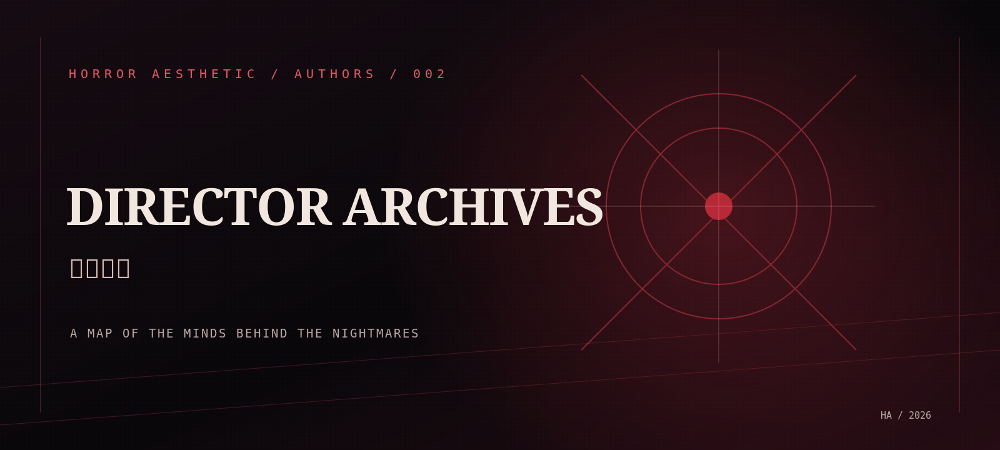
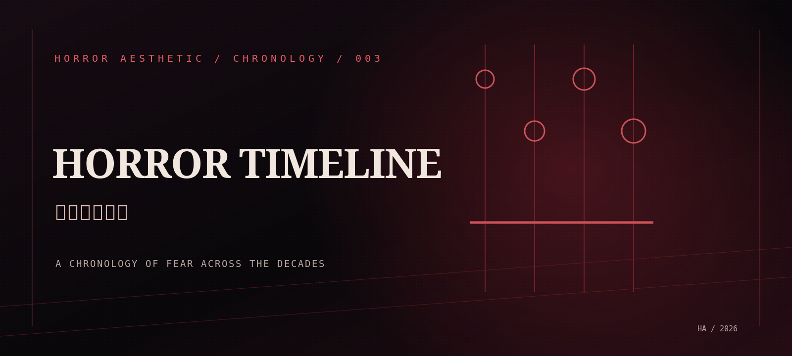
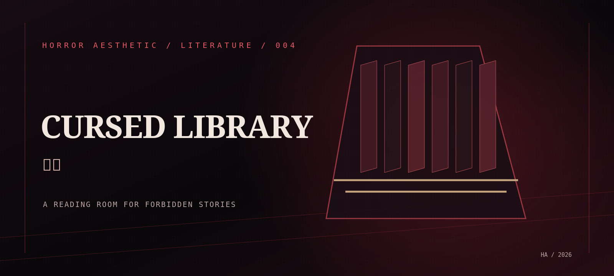
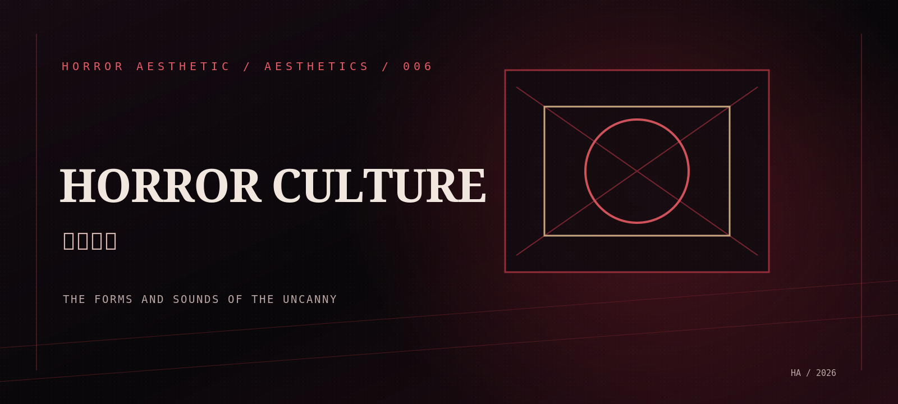
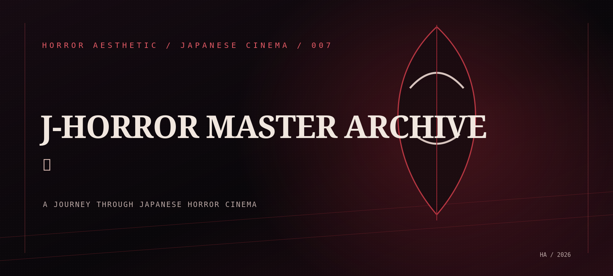
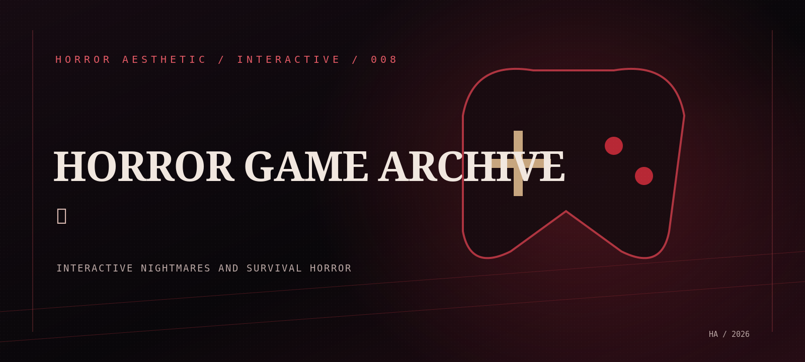
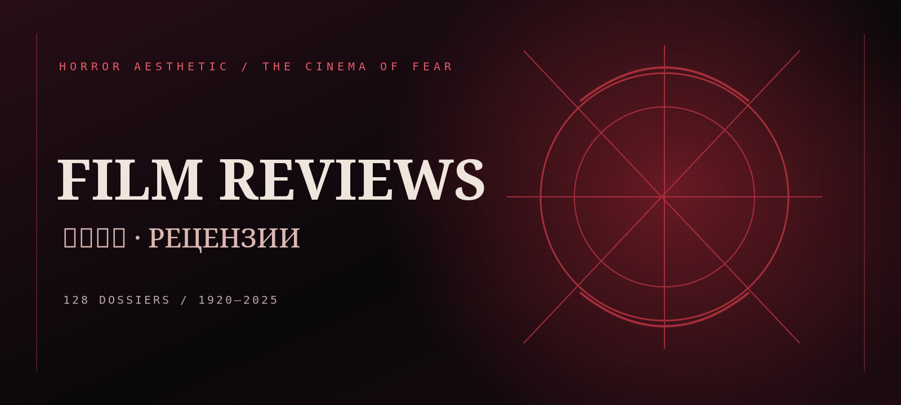

HA / 001
HA / 001THE DARK ARCHIVEТЁМНЫЙ АРХИВ
128 film dossiers, searchable and bilingual.
128 кинодосье с поиском на двух языках.
EXPLORE FILE ↗A gallery of original editorial artwork created for the Horror Aesthetic universe — from Japanese nightmares and folklore to cinema, literature and interactive horror.
Галерея авторского редакционного оформления вселенной Horror Aesthetic — от японских кошмаров и фольклора до кино, литературы и интерактивного хоррора.
HA / 001128 film dossiers, searchable and bilingual.
128 кинодосье с поиском на двух языках.
EXPLORE FILE ↗
HA / 002Directors, filmographies and connected works.
Режиссёры, фильмографии и связанные фильмы.
EXPLORE FILE ↗
HA / 003A historical path through horror cinema.
История хоррора в хронологическом порядке.
EXPLORE FILE ↗
HA / 004Books, authors and the written nightmare.
Книги, авторы и кошмар на страницах.
EXPLORE FILE ↗ HA / 005
HA / 005Myths, spirits, legends and supernatural roots.
Мифы, духи, легенды и корни сверхъестественного.
EXPLORE FILE ↗
HA / 006The visual language and culture of horror.
Визуальный язык и культура ужасов.
EXPLORE FILE ↗
HA / 007Japanese horror, kaidan and cinematic dread.
Японский хоррор, кайдан и кинематографический страх.
EXPLORE FILE ↗
HA / 008Survival horror and interactive nightmares.
Survival horror и интерактивные кошмары.
EXPLORE FILE ↗
HA / 009A growing catalogue of film criticism.
Растущий каталог авторских кинорецензий.
EXPLORE FILE ↗